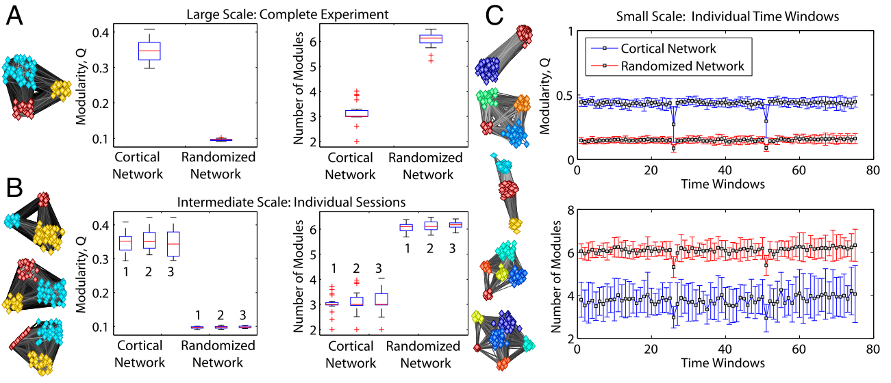
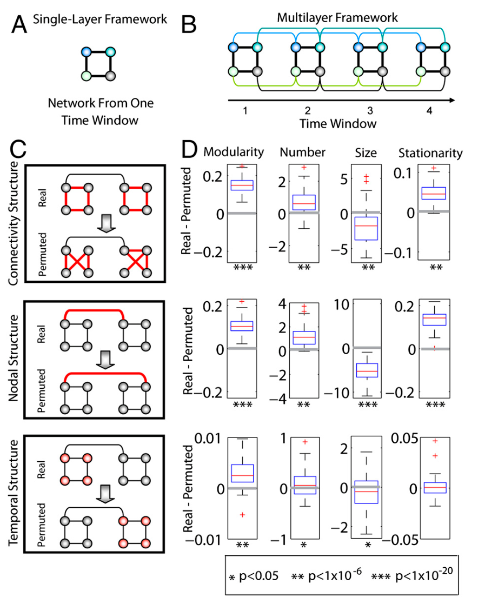

#+REVEAL_DEFAULT_FRAG_STYLE frag:t
Introduction
- The brain must be able to use its existing architecture to adapt to its learning environment.
- This adaptation happens over various time scales
Hypothesis
- Based on studies of modularity, it was expected that FN of motor skill learning would display modular structure over various temporal scales
- Modular structure should change over time during learning, and the characteristics would be associated with learning success
Structure of investigation

- For each time window (days, hours, minutes):
- Parcilated fMRI data into 112 corticle structures
- Generated FC and created a subject-specific weighted functional brain network
Identify static modular structure

- At each time point they used the modularity maximization to identify the modularity of the FN. Each time subject’s FN had significantly more modularity than a random network
Dynamic modular structure

- Assessed modular structure of network over time and constructed three null models
- connectional null model: scrambles links between nodes in each time window
- nodal null model: a node in one time window to a randomly chosen node in the previous and next time window
- temporal null model, which we identified by comparing the true multilayer network to a temporally permuted network.
Investigation of flexibility

- Defined as the amount of times a node changes module alliance normalized by total possible changes
- Flexibility of the network is defined as the mean flexibility over all nodes
- Expected to use an individual’s flexibility in on session as a predictor of learning for the next session.
Investigation of flexibility
- Regions that were most responsible for predictive power in learning were primarily located in the presupplementary motor, posterior parietal and occipital cortices
- They were not able to predict learning however
Conclusions (modularity of functional connectivity)
- Functional connectivity in learning is segregated into communities that vary over various time scales (days, hours, minutes)
- Connectivity at the shortest time scale exhibited the highest variability
Conclusions (Dynamic network evolution)
- Community organization changed smoothly over time
Conclusions (Dynamic network evolution)
Diverse regions of the brain performed different roles within communities:
- Some maintain community structure
- Others constantly shift their alliance
- Learning motor skills induce changes in both structure and connectivity, increasing excitability and decreasing inhibition of neural circuits
Conclusion (Flexibility)
- Modular structure varied across individuals but was also shown to be consistent in the whole group
- Flexibility might be characterized by noise - as in signal variability supports mental effort in cognitive operations
Comments
- High variablility in lower time scales may not be because of learning.
- Can we verify permanent learning over longer time scales? (try same task again at a much later time point and verify its “signature”)